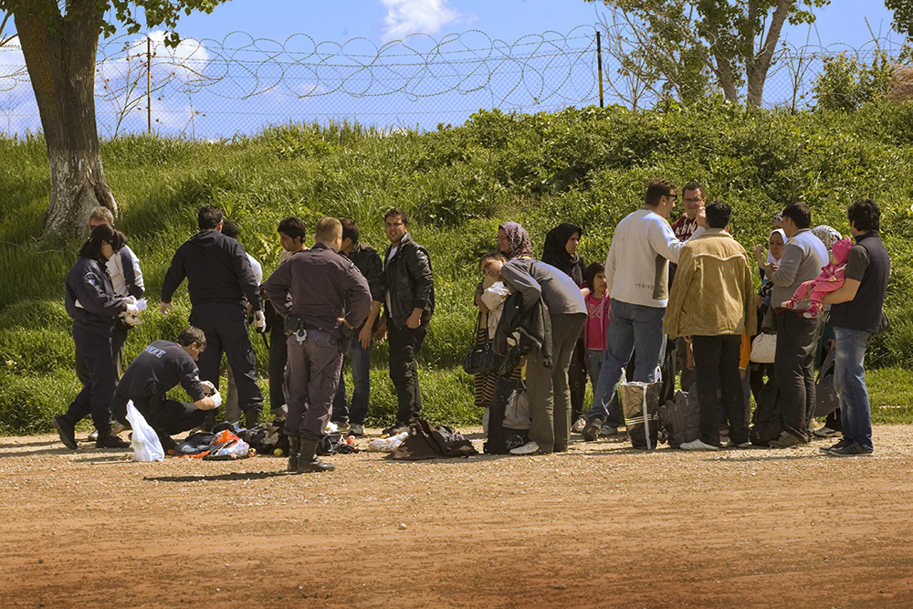

La plaza estaba vigilada por francotiradores apostados en las azoteas. Salwah Mekrsh lo sabía, pero decidió cruzarla porque el atardecer se desvanecía en el polvoriento casco antiguo de Alepo. Era otoño de 2012 y por aquel entonces la ciudad más estratégica del norte de Siria ya era uno de los principales campos de batalla entre las tropas sirias y los grupos de la oposición armada. La adolescente fue tiroteada por la espalda.
Salwah fue trasladada a varios hospitales de Alepo pero sus heridas eran graves y tuvo que cruzar la frontera y ser atendida en Turquía, donde se sometió a varias operaciones quirúrgicas en la espalda. Fueron días horribles para la adolescente de 18 años y su familia, que la acompañó en el exilio. Se refugiaron en Kilis, ciudad del sur de Turquía y primer destino para la mayoría de los sirios que huyen de los combates en Alepo y sus aledaños. La vida de Salwah había cambiado por completo: los balazos la dejaron en silla de ruedas.
Las víctimas del conflicto sirio siguen aumentando. La guerra, que se inició en primavera de 2011, ha devastado a un país árabe de más de 22 millones de habitantes situado a las puertas de Europa y rodeado de conflictos: el iraquí al este y el israelí-palestino al sur. En un informe reciente, la ONU cifró en 191.369 las muertes documentadas hasta abril de 2014 en Siria, pero alertó de que el número real podría ser mucho mayor.
Los refugiados ya ascienden a más de tres millones. Este éxodo en el corazón de Oriente Próximo ha supuesto un reto para los países colindantes, sin que Europa haya movido un dedo para abrir sus puertas a los que huyen de las bombas. Líbano, Turquía, Jordania, Irak y en menor medida Egipto son los principales países receptores de refugiados sirios.
Fuente: ACNUR
La discusión humanitaria ha girado desde el principio en torno a la suerte de los refugiados porque han crecido de forma exponencial, pero los que siguen dentro de Siria están expuestos a la guerra y tienen menos asistencia. La ONU estima en 6,45 millones el número de desplazados internos, pero los cálculos son imprecisos porque es muy difícil para las organizaciones humanitarias atravesar los frentes de batalla. El Gobierno sirio controla férreamente la distribución de ayuda humanitaria en su territorio, mientras que la inseguridad y las restricciones reinan en las áreas controladas por la miríada de grupos de la oposición armada, donde MSF tiene tres hospitales.
Las zonas con más desplazados internos son las que han sufrido con mayor intensidad el rigor de los combates entre Gobierno y oposición: la periferia rural de Damasco y las provincias de Homs, Deir ez Zor, Idlib y Alepo. Al compás de la guerra, buena parte de estas poblaciones han sufrido bombardeos indiscriminados, ataques con cohetes y destrucción de infraestructuras como escuelas y hospitales, usadas por las comunidades como refugio improvisado. A causa del conflicto, centenares de miles de viviendas han sido devastadas o dañadas. El desplazamiento colectivo, señal de que las partes en conflicto han utilizado la estrategia de atacar enclaves atendiendo a la etnia o la adscripción sectaria de la población, es otro de los dramas de la guerra.
El caso de la castigada ciudad de Alepo, antaño capital industrial y económica del país, es paradigmático. Desde diciembre de 2013, los sucesivos ataques y bombardeos han propiciado oleadas de heridos y desplazados. Los hospitales se han visto desbordados cuando se han producido emergencias de esta magnitud. El lanzamiento de barriles explosivos desde helicópteros sirios ha sido la táctica más usada por el Ejército. Un río de civiles en busca de realojamiento transcurre por la franja rural situada entre la ciudad de Alepo y la frontera turca.
Hasta 2013, el 85 por ciento de los desplazados había buscado cobijo en domicilios de familiares. Pero también hay campos. Sobre las antiguas aduanas de la provincia de Alepo se ha habilitado un campamento a las puertas de Turquía que sirve para medir el nivel de violencia en la región: en otoño de 2012 había unas 4.000 personas y ahora, unas 15.000. "Vivíamos en un barrio de Alepo y un avión de combate nos atacó con grandes misiles. Muchas casas quedaron destrozadas, entre ellas la mía", cuenta Husein Alwawi, alojado en la mezquita del campo junto a sus cinco hijos. Husein solicitó su ingreso en los campos de refugiados turcos, pero el proceso se demora. Muchos otros, sobre todo los que no tienen documentación, ignoran la frontera oficial e intentan pasar al otro lado a través de los olivares.
Ahmed Beidun es otra de las víctimas de la guerra. En 2013, huyó junto a su familia y se refugió en un lúgubre garaje de la ciudad turca de Kilis. Eran 16 personas. En el local, carcomido por la humedad, se amontonan platos, mantas, esterillas y juegos de té. Enfundado en una chaqueta Puma, Ahmed mira con tristeza sus muletas. "Quiero un pie ortopédico", repite. Le tuvieron que amputar el pie izquierdo tras un bombardeo en Alepo. "Estaba herido y no podía ver nada, no había luz. Empecé a mirar a mi alrededor y no encontré a nadie", recuerda Ahmed, que tuvo que ser trasladado a Turquía. Las secuelas psicológicas del ataque le persiguen.
Para el refugiado, las primeras semanas después de la huida son de agitación y ansiedad. Los que han sufrido heridas de guerra o tienen problemas médicos se enfrentan a una situación extraordinariamente más complicada, sobre todo cuando forman parte de familias numerosas. En 2012, era fácil encontrar familias que estuvieran más o menos seguras de volver pronto a casa. El año 2013, marcado por el auge de la violencia, se encargó de instalar la incertidumbre en los campos y las casas provisionales de los refugiados. Los últimos meses en Alepo, con continuos bombardeos que han afectado a la población civil, son un recordatorio de que la guerra, más cruda si cabe, continúa pese a que el foco mediático se haya fijado en otra parte del globo.
Al principio, la mayoría de las familias refugiadas aguantan el tirón, ya que antes de la guerra Siria tenía unos indicadores socioeconómicos aceptables. Pero los largos meses en el exilio van haciendo mella en las finanzas domésticas y en la moral familiar. Emergen la nostalgia y el desconcierto. Se trata de una situación común entre los refugiados que viven en Estambul. Llegan a la gran metrópolis turca porque tienen recursos económicos, pero estos se van consumiendo en una ciudad donde el precio de los bienes básicos es más elevado que en el sur del país, donde se hallan los campamentos de refugiados habilitados a lo largo de la frontera con Siria.
Hassan Nasser, de 42 años, regentaba una tienda de ropa en una localidad en las afueras de Damasco. "Éramos clase media y lo perdimos todo", se queja. Hassan participó en las primeras protestas contra el Gobierno sirio en marzo de 2011, pero pronto llegaron las represalias.
Hassan se refugió en Turquía junto a su familia. Ahora viven en un sótano en Estambul. En el piso se impone el ruido monótono de las noticias sobre Siria y el estruendo enlatado de las bombas. "Cada día estoy pegado a la televisión para ver qué pasa en Siria. No quiero olvidarme de mi país", dice Hassan.
Tras participar en las protestas, las fuerzas de seguridad fueron a buscar a Hassan a su domicilio en Siria. Saltó desde el tercer piso y se lastimó la espalda. Arrastró el problema médico a Turquía, donde le han hecho un sinfín de pruebas para dilucidar si su espalda debe ser operada. De momento, tiene dificultades para caminar y no puede trabajar.
Hassan y su familia tenían ahorros y pudieron permitirse vivir en Estambul. Pero no hay nuevas fuentes de ingresos y poco a poco la economía familiar se está desmoronando.
El 25 de junio de 2013 nació la primera hija de Hassan en el exilio, Zein al Sham. El hogar siguió creciendo, porque uno de los primos de Hassan se mudó al piso junto a toda su familia. Están en una situación límite.
Casi a diario, la familia usa la tecnología para hablar con los seres queridos que siguen en Siria. Es el hilo que los mantiene unidos a su país. Y lo seguirá siendo durante un tiempo, porque tienen claro que no volverán a Siria hasta que se acabe la guerra.
"Mi madre sigue en Siria y aún no ha podido conocer a su nieta. Solo la ha visto por Skype", lamenta Hassan.
A Hassan, como a otros refugiados sirios, le gustaría vivir en un país de la Unión Europea (UE). "Muchos sirios entran de forma irregular en Europa a través de traficantes, pero es muy peligroso. Mi familia no puede hacer eso. Si me saliera algo, iría a Europa con los papeles en regla", asegura desde su sótano de Estambul. No es probable que Hassan lo logre.
De momento, la catástrofe humanitaria de Siria no ha hecho aflorar sentimientos de solidaridad en Europa, tal y como ha denunciado Amnistía Internacional. El 94 por ciento de los tres millones de refugiados sirios se hallan en Líbano, Jordania, Turquía e Irak. La Agencia de la ONU para los Refugiados (ACNUR) lanzó un llamamiento para que los países occidentales acojan a la población siria afectada por el conflicto, pero estos tan solo han ofrecido hasta ahora 42.058 plazas y 28.500 de ellas son de Alemania. Estos programas de reasentamiento, que otorgan el permiso de residencia en el país de acogida, van teóricamente dirigidos a los refugiados más vulnerables que ya se han registrado en los países vecinos. Pero ocurre que el esfuerzo conjunto de los países de la UE no sirve ni para acoger al uno por ciento de los refugiados sirios. La conclusión es clara: los países de la región están empleando sus recursos económicos y viendo cómo se saturan sus sistemas de salud, mientras que Europa mira hacia otro lado pese a que la crisis tiene lugar justo a sus puertas.
Más de 50.000 sirios pidieron el asilo en países de la UE en 2013. Siria encabeza la lista de solicitantes de asilo, seguida por Rusia y Afganistán, pero en términos absolutos son muy pocas solicitudes porque el proceso burocrático acostumbra a demorarse y los refugiados prefieren tener libertad de movimientos. Desesperados, muchos entran en contacto con traficantes y optan por arriesgar su vida para intentar penetrar en la UE. Una de las rutas marítimas más peligrosas va desde el litoral libio a las costas de Italia, como se ha podido comprobar con la muerte de centenares de personas, muchas de ellas sirias, cerca de Lampedusa.
Otra ruta habitual era la frontera terrestre de Evros, en el norte de Grecia, pero en verano de 2012 las autoridades desplegaron a unos 2.000 agentes y construyeron un muro de 10 kilómetros.

Migrantes en la región de Evros, situada en la frontera entre Grecia y Turquía, en abril de 2012.
Juan Carlos Tomasi / MSF
En varios informes, la agencia de la UE que vigila las fronteras de los estados miembros (Frontex) se felicita de que estas medidas contribuyeran a una disminución de la entrada de migrantes por esta ruta. Pero lo que ocurrió es que el flujo se desplazó al sur, a las islas del Egeo. En otras palabras: las autoridades han empujado a miles de migrantes y refugiados que huyen de guerras como la de Siria o Afganistán a jugarse la vida de nuevo, esta vez en pateras.
Aunque no hay datos oficiales de llegadas, los arrestos dan una idea de las dinámicas del fenómeno migratorio.
Las cifras de sirios y afganos incluyen detenciones por entrada irregular, durante operaciones policiales y por intentos de salida.
El número total solo se refiere a las detenciones de recién llegados en la frontera greco-turca.
Fuente: Policía griega.
Están llamando a las puertas de Europa. En los primeros siete meses de 2013, casi 12.000 sirios fueron arrestados por entrada o estancia irregular en Grecia. "Desde 2004, la mayoría de migrantes que llegaban aquí eran afganos, pero ahora hay más sirios que cualquier otra nacionalidad", resume Ioanna Kotsioni, experta de migración de Médicos Sin Fronteras, organización que ha lanzado intervenciones humanitarias tanto en Lesbos como en Evros. Uno de estos sirios es el joven Lawand Deek, que en 2013 dejó atrás a su familia y entró en Turquía con la idea de atravesar el país, viajar a Grecia y acabar estudiando en el Reino Unido o Canadá. Capítulo a capítulo, Lawand, de 21 años, anotó en su diario íntimo todos los pormenores de la peligrosa travesía.
Las imágenes son de primavera de 2013. Medio año después, la ilusión de Lawand parecía evaporarse en Atenas. Tras meses de tedio y desesperación en la capital helena, Lawand perdió mucho dinero y empezó a ver cada vez más lejana la posibilidad de salir del país. "No sé adónde iré", suspiraba el joven, que descartaba la vía marítima y describía como un suceso "trágico" la muerte de centenares de personas cerca de Lampedusa.
Pronto el estatus de Facebook de Lawand cambió. Logró instalarse en el Reino Unido y se alojó en Cardiff, donde comparte piso y estudia inglés. "He pedido entrar en la Universidad de Alberta, en Canadá, para hacer la carrera de Comercio", explica por teléfono el joven sirio, que se niega a explicar cómo llegó a Cardiff.
Como Lawand, miles de migrantes y refugiados que huyen de países en conflicto deambulan en el exilio a la espera de definir su horizonte vital, moviéndose en un complejo territorio entre la burocracia, las políticas migratorias y la crueldad de las redes de tráfico de personas. En la última década, el influjo de afganos había sido –y sigue siendo– un recordatorio de las dramáticas consecuencias de la guerra en el país centroasiático. Estos últimos años marcan el inicio de un éxodo que Europa está ignorando. Pasará tiempo hasta que la crisis humanitaria, que se agrava en paralelo al conflicto en Siria, empiece a aliviarse. Los hospitales continuarán desbordados de heridos, como ha sucedido en Alepo durante los últimos meses. Escapar será la única esperanza para cientos de miles de personas; los problemas de acogida en los campos de refugiados de los países limítrofes se reproducirán. Mientras las bombas sigan cayendo sobre Siria, mujeres como Salwah resultarán heridas, hombres como Ahmed huirán a Turquía y jóvenes como Lawand buscarán un futuro mejor en Occidente.